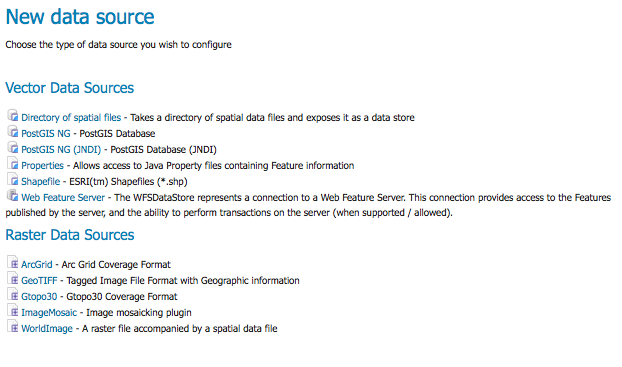
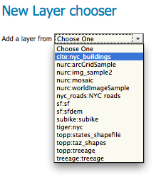
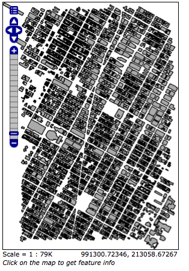

Publishing a PostGIS Table¶
이번 예제에서 GeoServer에서 PostGIS 테이블을 생산하는 방법을 단계별로 설명합니다.
주석
이 예제는 GeoServer가 http://localhost:8080/geoserver/web 주소에서 실행되고 있다고 가정합니다.
주석
이 예제는 PostGIS가 사용자의 시스템에 이미 설치돼 있다고 가정합니다.
Getting Started¶
nyc_buildings.zip 압축 파일을 다운로드합니다. 이 파일에 이번 예제에서 사용할 뉴욕 시 건물 데이터셋의 PostGIS 덤프(dump)가 압축되어 있습니다.
“nyc”라는 PostGIS 데이터베이스를 만드십시오. 다음 명령어로 만들 수 있습니다.
createdb -T template_postgis nyc
PostGIS 설치 시 “postgis_template”이 설정되지 않았다면, 다음 명령어로 같은 결과를 낼 수 있습니다.
...nyc_buildings.zip 파일을 시스템 내부 적당한 장소에 풉니다. nyc_buildings.sql 파일이 나올 것입니다.
nyc_buildings.sql 파일을 nyc 데이터베이스로 임포트(import)합니다.
psql -f nyc_buildings.sql nyc
Create a Data Store¶
먼저 PostGIS 데이터베이스 “nyc”를 위한 데이터 저장소(data store)를 만들어야 합니다. 이 데이터 저장소는 GeoServer가 데이터베이스에 접속하는 방법을 설정합니다.
웹브라우저에서 http://localhost:8080/geoserver 주소로 이동하십시오.
왼쪽 메뉴에서 Data‣Stores 를 클릭합니다.
새로운 Data Source 추가
PostGIS NG 링크를 클릭하여 새로운 데이터 저장소를 추가합니다.
Basic Store Info 페이지로 갑니다. Workspace는 기본값을 유지하고, Data Source Name 란에 nyc_buildings을 입력한 다음, Description 란에 간단한 설명을 입력합니다.

Basic Store Info 페이지
PostGIS 데이터베이스의 접속 파라미터(Connection Parameters)를 설정합니다.
dbtype postgisng host localhost post 5432 database nyc schema public user PostgreSQL 사용자명 입력 passwd PostgreSQL 비밀번호 입력 validate connections 체크박스를 클릭 주석
user 및 passwd 파라미터는 해당 PostGIS 데이터베이스를 만든 사용자의 것이어야 합니다. PostgreSQL을 어떻게 설정하느냐에 따라 passwd 파라미터가 필요 없을 수도 있습니다.
접속 파라미터 설정
Save를 클릭합니다.
Create a Layer¶
왼쪽 메뉴에서 Data‣Layers 를 클릭합니다.
Add a new resource를 클릭합니다.
New Layer chooser 드롭다운 메뉴에서 cite:nyc_buidings를 선택합니다.
새로운 Layer를 드롭다운 메뉴에서 선택
새로 나타난 레이어 행에서, 레이어명 nyc_buildings를 선택합니다.

새로운 Layer 행
Edit Layer 페이지에서 레이어의 Data 및 Publishing 파라미터를 정의합니다. Title 란 및 Abstract 란에 nyc_buildings 레이어에 대해 짧게 입력합니다.

Basic Resource Info 페이지
레이어의 bounding boxes를 생성하기 위해 먼저 Compute from data를 클릭한 다음 Compute from Native bounds를 클릭합니다.

Bounding Boxes 생성
Publishing 탭으로 전환하여 레이어 스타일을 설정하십시오.
Default Style 드롭다운 목록에서 polygon 스타일을 선택하십시오.

기본 스타일 선택
페이지 맨 아래로 스크롤한 다음 Save를 클릭하여 레이어 설정을 완료합니다.
Preview the Layer¶
nyc_buildings 레이어가 정확히 생산됐는지 확인하려면 레이어 미리보기를 할 수 있습니다. Layer Preview 화면으로 이동해서 cite:nyc_buildings 레이어를 찾아보십시오.
레이어 미리보기
Common Formats 열의 OpenLayers 링크를 클릭하십시오.
성공입니다! 새 페이지에 OpenLayers 맵이 로드되어 기본 polygon 스타일로 레이어 데이터를 표시했습니다. 미리보기 맵에서 데이터셋을 줌인·줌아웃하거나 이동(pan)시켜볼 수 있으며, 피처(feature)의 속성(attribute)들을 표시해볼 수도 있습니다.
nyc_buildings 레이어의 미리보기 맵